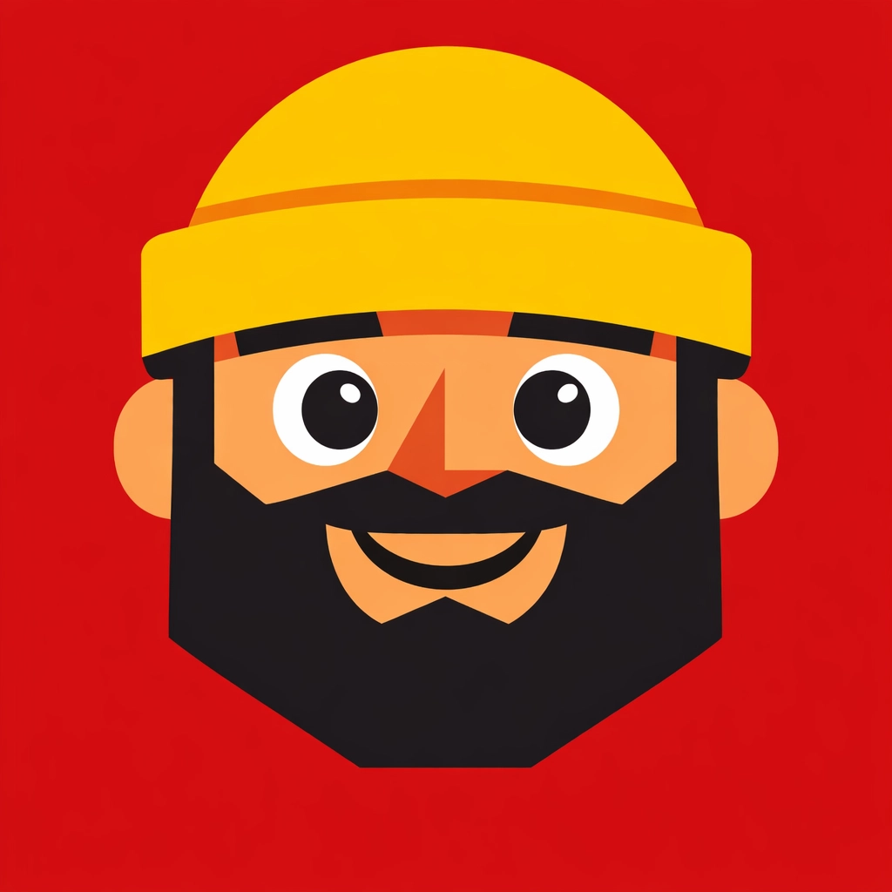
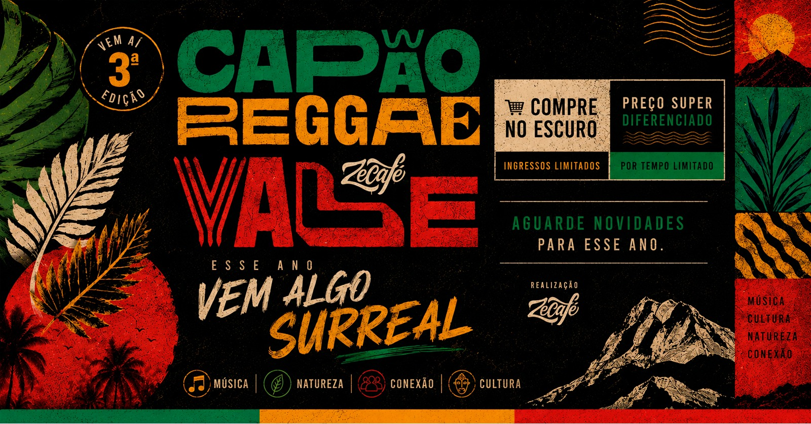

ZÉ CAPÃO
DELIVERY
DELIVERY
🔔
O que você
precisa hoje?
📍 Vale do Capão • BA
🔎 Buscar produtos, lojas, serviços...
🍽️Comer & Beber
🛒Mercados
🛍️Lojas
🏡Hospedagem
🥾Passeios & Experiências
🧭Turismo & Serviços
🎟️Eventos

Eventos do Vale · ver agenda